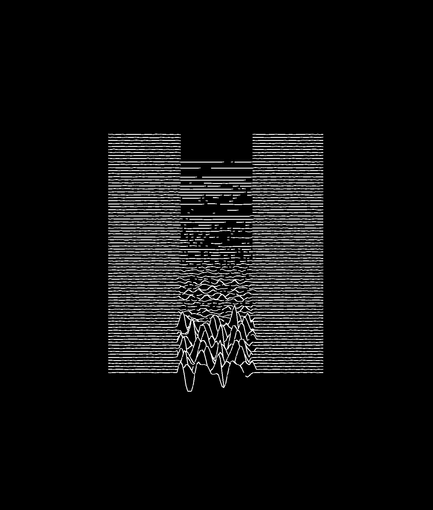

Zeke Medley
— Software, Designer. Student.
Hi. Welcome to my website. I'm Zeke. I'm studying Electrical Engineering and Computer Sciences at UC Berkeley with a particular interest in programming languages and secure, fast code.
I've collected some of my work here.

Software,
- → Paraglob. A data structure for extremely quick string matching used in the Zeek Network Security Monitor. GitHub.
- → Unknown Pleasures. Audio visualizations in the same style as Unknown Pleasures by Joy Division.
- → Key-Value For Loops. Key-value for loops in open source Zeek.
- λ Lambdas! with closures in open source Zeek.
- → Rock Paper Scissors. Quite possibly the fastest player of rock paper scissors on the internet.
- → Where Is Your Internet IRL Tracks and plots the physical location of your internet traffic. Designed by Annalise Kamegawa.

Designer.
- → Anti Social Social Stop. Adding some music to the bus stop.
- → The Robot That Could. One weekend, one mission: build a robot that can.
- → Generative Design | Drone Chassis. A redesigned drone chassis using generative design for strong, lightweight components.
- → Alternative Crayola. A 3D printed, silicone molded, subwoofer powered, crayola monkey skull.
- → Marathons Kill. A homage to the dead and a commentary on anecdotal evidence.

Student.
— UC Berkeley. Electrical Engineering and Computer Sciences.
I'm both an avid student and active member of Berkeley's design and makerspace community.